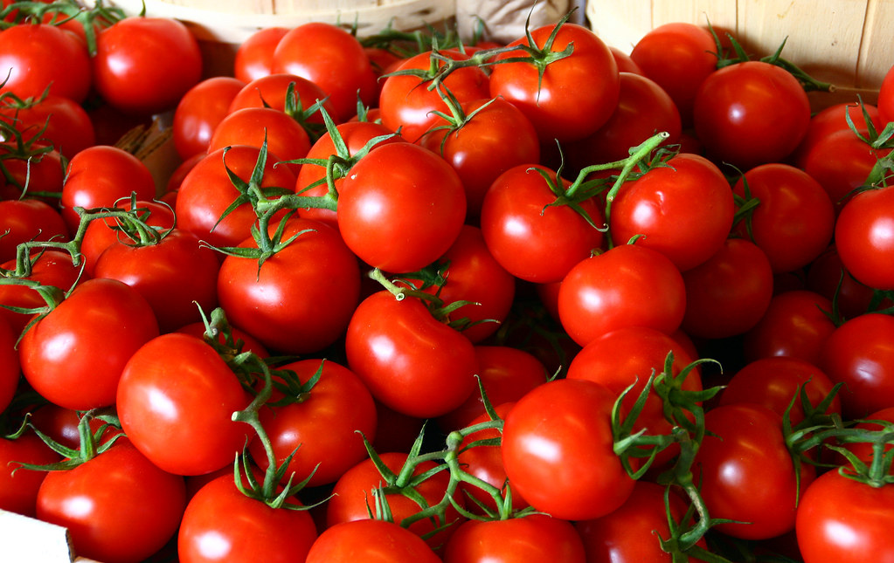

¿Qué es y cómo funciona el sistema de impresión offset?
Banderas de los 54 países de África
Títulos Bonitos: todo lo que necesitas saber
Los 30 pasaportes más poderosos del mundo
Los 20 youtubers mexicanos con más suscriptores

¿Cuántos océanos hay en el planeta? ¿Cuáles son?

¿Cuál es la fruta más consumida del mundo?
Los 20 youtubers españoles con más suscriptores
En un mundo tan competitivo como el de Internet, muchos sitios web han ido y venido a lo largo de los años. Sin embargo, algunos de ellos se han apoderado de la imaginación del público y se han convertido en algo más que simples...
Se puede definir un continente como una gran superficie de tierra que se distingue de otras más pequeñas por conceptos geográficos —como los océanos— y culturales. A pesar de que esta definición es relativamente compartida en gran parte del planeta, sus demarcaciones no lo...
Si estás buscando cómo crear títulos bonitos, llamativos y personalizados, has llegado al lugar...
Roblox es, probablemente, el juego estrella de los últimos años. Para los despistados que...
Garena Free Fire es, sin duda alguna, el juego del momento. Más de 100...
El hipo es una contracción involuntaria y repetitiva del diafragma y los músculos intercostales...